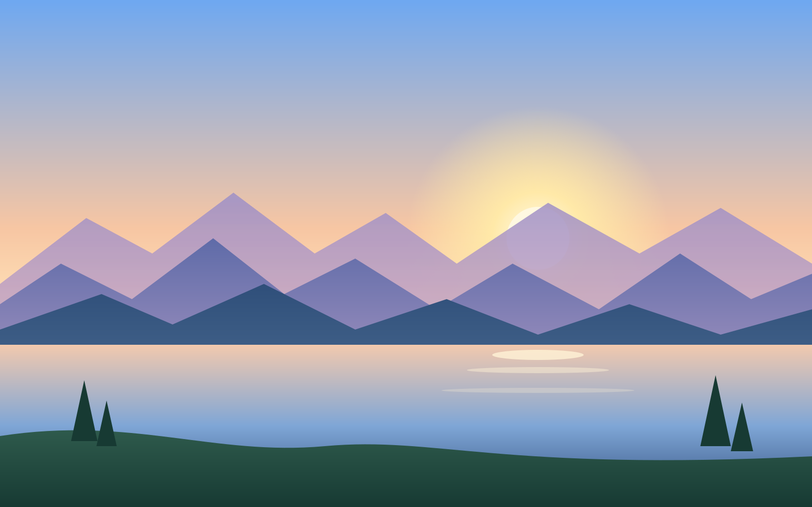

iOS screens
Clear glass over a photo, regular glass over a map. The controls bend what passes under their edges; the photo and the map stay untouched.

9:41
Today18:42
Photo viewer
Clear glass, because the photo is the point. The sky is bright, so every control has the 35% dark layer under its glyphs.
9:41
Search Maps
Recents
- Corner BakeryMill Street · 6 min walk
- Elm ParkHarbour Road · 12 min walk
Map
Regular glass for the tools and the search sheet. Street lines and names bend at the edges of the controls; the rows inside the sheet are solid so they stay easy to read.